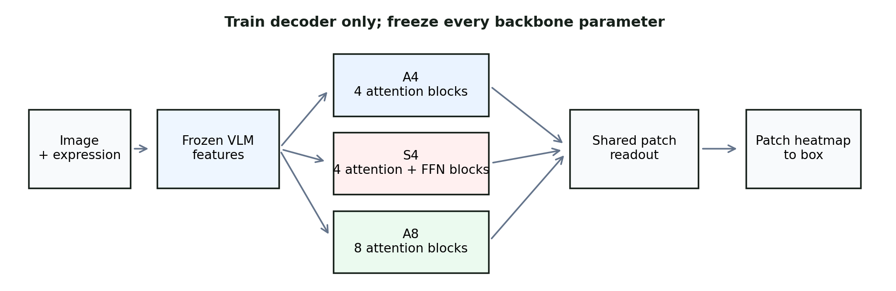
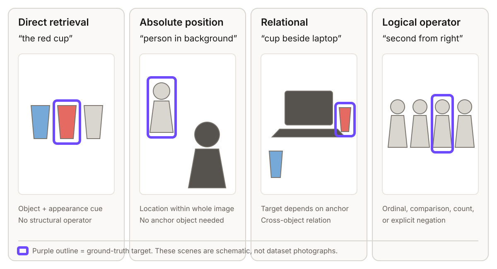
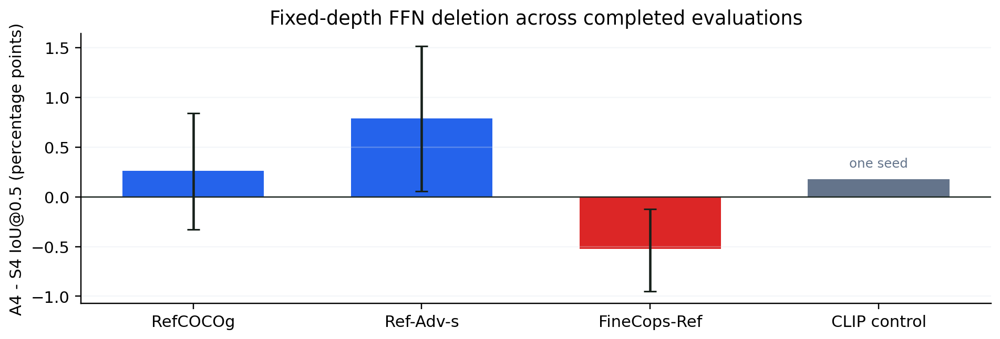
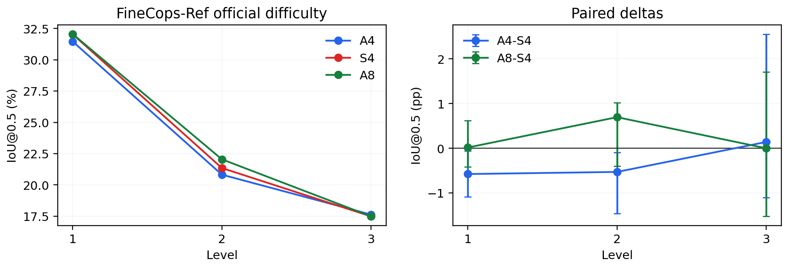
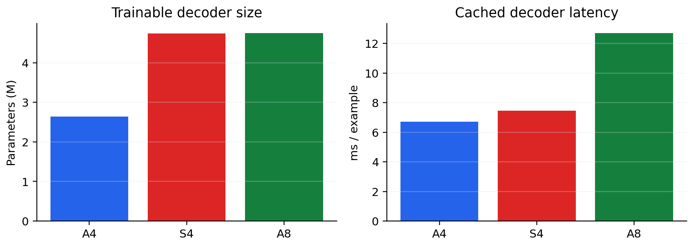

Visual grounding research · ICPRS 2027 adaptation
Do Visual Grounding Decoders Need Feed-Forward Networks?
When a vision-language model has already understood an image and a referring phrase, can a small decoder find the right object using attention alone?
Read the ICPRS paper · Read the full paper · Browse the repository
The question
Visual grounding turns an image and a phrase into one bounding box. For “the red cup beside the laptop,” the system must locate the cup, understand “beside,” and choose the right one if there are several cups.
Modern grounding decoders normally use two ingredients in every Transformer block: attention, which looks up relevant context, and a feed-forward network (FFN), which transforms each token after that lookup. We ask whether the FFN is still needed when a strong pretrained model has already produced rich visual and language features.

What the model is asked to do
Each record contains an image, one referring expression, and the box around the object that expression describes. The decoder receives frozen image patches and frozen text states, then places probability on the patches most likely to contain the target.

The first example is mostly retrieval: find the red cup. The third needs a relation: identify the cup relative to the laptop. The fourth adds an operator such as order, comparison, count, or negation. These distinctions let us ask where an attention-only decoder remains enough and where it begins to lose ground.
The experiment
We freeze the vision-language backbone and train only a compact grounding decoder. SigLIP 2 Base/16 at 384 px is the main backbone because it supplies a 24 × 24 grid of spatial image patches: enough resolution to point at an object without turning this into a full detection system.
A4 is the direct FFN-removal test. S4 is the normal matched decoder. A8 asks a follow-up question: if removing FFNs creates a gap, can that parameter budget be spent on more attention depth instead?
All variants share the frozen backbone, input projections, learned query, patch readout, training data, loss, optimizer, and deterministic conversion from a heatmap to a box. We choose the conversion threshold once on validation, then keep it fixed for every held-out evaluation.
The benchmark journey
We move from familiar referring expressions to deliberately challenging composition. The later benchmarks are evaluation-only: they do not choose the architecture, checkpoint, threshold, or analysis rule.
| Benchmark | Role | What it adds |
|---|---|---|
| RefCOCOg UMD 9,602 test expressions | Primary study | Standard referring expressions, paired three-seed comparison, and modality-shuffle controls. |
| RefCOCO UNC | Classic check | A separate, established grounding dataset under the same decoder design. |
| Ref-Adv-s 1,142 examples | Stress test | Released negation, expression-length, and distractor metadata. |
| FineCops-Ref 9,605 examples | Composition test | Official difficulty levels and relation types such as one-hop, two-hop, conjunction, and same-attribute references. |
For each test image, A4 and S4 are compared as a pair across three random seeds. We then resample images 10,000 times to estimate how stable the difference is, rather than treating multiple expressions from the same image as independent evidence.
What happened
The answer is pleasantly specific. A4 keeps up with the standard decoder on ordinary and adversarial grounding. FineCops reveals a small fixed-depth difference, and A8 closes that difference by adding attention depth.

| Evaluation | A4 versus S4 | Reading |
|---|---|---|
| RefCOCOg direct | +0.26 pp 90% CI −0.33 to +0.84 | Attention-only retains ordinary direct grounding. |
| Ref-Adv-s | +0.79 pp 95% CI +0.06 to +1.52 | No broad loss on the released adversarial slices. |
| FineCops-Ref | −0.52 pp 95% CI −0.95 to −0.12 | S4 wins by about half a correctly grounded example per 100. |
| FineCops: A8 versus S4 | +0.26 pp | Extra attention depth recovers the overall FineCops difference. |


The takeaway
For a small grounding decoder over frozen vision-language features, FFNs are often dispensable. Attention alone preserves ordinary grounding and remains competitive under adversarial references. Where a small compositional gap appears, allocating the same parameter budget to deeper attention recovers it.
Scope: this study changes the trainable grounding decoder, not the pretrained backbone. It predicts one box from a 24 × 24 patch heatmap, so it is a focused result about decoder capacity allocation.
Inspect the evidence
ICPRS 2027 submission
We prepared a compact, anonymous IEEE conference-format version for the IEEE International Conference on Pattern Recognition Systems. It is three pages total—two body pages plus one references page—within the venue’s six-page paper plus one-page references limit.
The manuscript intentionally has no author name, affiliation, GitHub link, or identifying PDF metadata for double-blind review. Enter the real author list only in ConfTool. Choose Regular Student Paper if the first author is officially registered as a student at submission; otherwise choose Regular Paper.